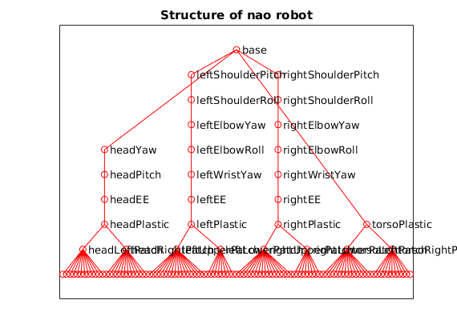
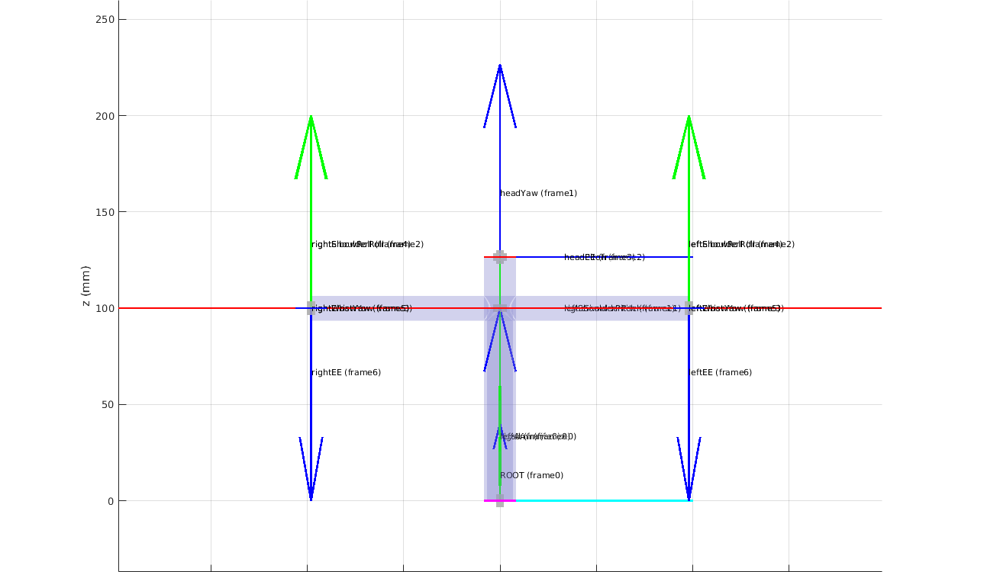
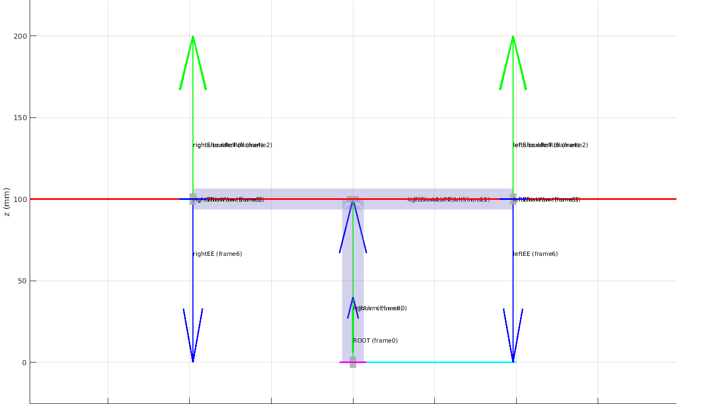
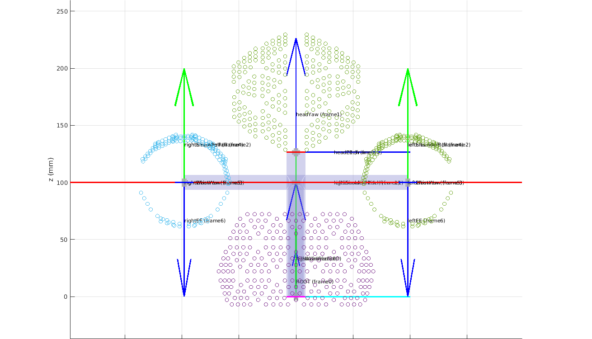
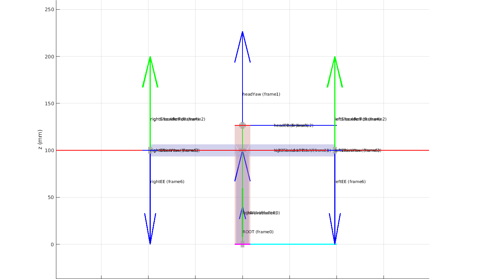
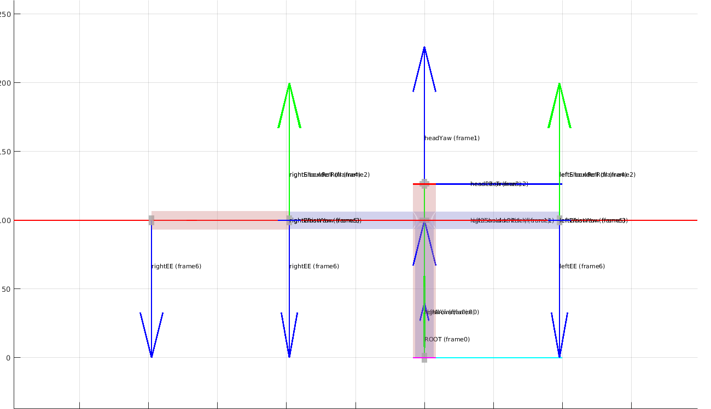

Contents
Example of models supported in the toolbox
% For all of the function, you need to create a robot.
One possibility is to create a new one
rob=Robot('loadNAO');
Or you can load robot from results
load('Results/exampleNao/info.mat');
Graph model
% This model shows robot as tree-based graph
rob.showGraphModel()
 Matlab model
% This model shows 3D visualization of the robot % This function needs the joint angles to be provided. They need to be given in orded as are chains defined in Robot.
If you do not know this order, look at
fieldnames(rob.structure.DH)
ans =
7×1 cell array
'leftArm'
'rightArm'
'head'
'torsoSkin'
'leftArmSkin'
'rightArmSkin'
'headSkin'
The angles for individual joints are in order as they goes from root to the end-effector (or the last joint). And there must be one joint angle for each joint, which means it sometimes requires to add '0' (zero) to position, where virtual link is added and the robot does not normally has a joint angle - usually torso or end-effectors.
% **If the robot does not have 'movable' torso (ie. joint angles are always % zero), do not pass joint angles into the function** % You can provide joint angles for all chains (all physical chain, providing joint angles of for example skin will not work). close all rob.showModel({[0,0,0,0,0,0],[0,0,0,0,0,0],[0,0,0]})
Or you can add joint angles just for first few chains. Here, the head will not be shown
close all
rob.showModel({[0,0,0,0,0,0],[0,0,0,0,0,0]})
 The function also supports visualization of the skin/markers
close all rob.showModel({[0,0,0,0,0,0],[0,0,0,0,0,0],[0,0,0]},'skin',1)
And to compare with other settings, two robots can be shown.
% You can either just turn the other robot on and it will load DH from 'defaultDH' field of 'Robot.structure' close all rob.showModel({[0,0,0,0,0,0],[0,0,0,0,0,0],[0,0,0]},'dual',1)
Or you can pass the new DH
close all newDH=rob.structure.DH; newDH.rightArm(6,1)=0.1; rob.showModel({[0,0,0,0,0,0],[0,0,0,0,0,0],[0,0,0]},'dual',1,'dualDH',newDH)